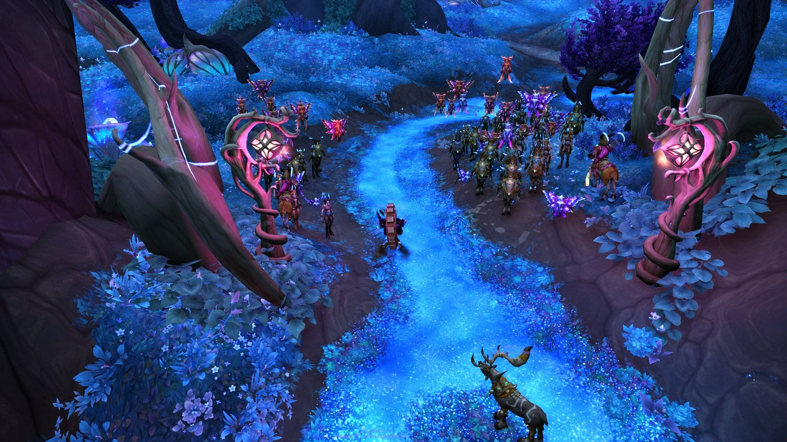

Write down names and stories before the world erases them.
CHRONICLES OF AZEROTH CHARACTER ARCHIVE VOLUME I
ORIGINAL ROLEPLAY LORE · FOREVER
Xuthar
Xuthar
Morvayne
The Last Witness
He was raised to find answers in the Light. The unanswered prayers taught him to ask better questions. Now he follows the forgotten roads of Azeroth, listening to the people history will never remember.
“The Light reveals what remains. The Shadow keeps what has been forgotten.”
THE PREMISE · A LIFE WITHOUT PROPHECYNot a chosen one.
Not a chosen one.
A man who refuses to forget.
Xuthar does not believe the world owes him a destiny. He is neither an infallible prophet nor a secret king. He is a former student of the Holy Light, a patient collector of testimony, and a priest who fears the seduction of his own power. His gift—if it is a gift—is to hear what others overlook.
He carries a needle, a travel journal, and a page that will not remain blank. He makes his own robes because cloth can be repaired; he enchants them because some things should last longer than the hands that made them.
His central conflict: to seek the truth without allowing the Void's persuasive, contradictory whispers to replace his own judgment.

The Void may know things. It may also invent them.
Friendship, ordinary work, honest doubts and room to be wrong.
IN-GAME DIARY · 5–6 NOVEMBER 2026 · LEVELS FIVE TO EIGHT
The moments that nearly ended the road.
Recovered from four in-game diary screenshots. These are recorded close calls and personal milestones, not additional completed quests.
Out of the Defias fields
Xuthar escaped a Defias Thug and two other attackers with almost no life remaining.
The Kobold close calls
Two separate narrow escapes involving a Kobold Tunneler and a Kobold Miner, each alongside another enemy.
Two Murlocs, one escape
The diary remembers a desperate retreat from two Murlocs. A Streamrunner has killed Xuthar twice in the diary's lifetime record, without individual dates.
Sandriana, robes and a bag
Sandriana is recorded twice; Friar's Robes of the Light were his first green-quality item and Book Bag his first bag.
Evidence note: the diary's 5 November death summary differs from two separately photographed Fargodeep death screens. We retain both sources without inventing a definitive total.
BOOK I · THE MAKING OF A WITNESS
Before the road.
The following memories form Xuthar's fixed personal backstory, not events claimed to have occurred during play.
A house of empty shelves
The Morvaynes were never rulers, generals or heroes. Once, they kept registers, copied letters and preserved records for people who could not read or write. Their fortunes dwindled over generations; their family name survived in margins, not monuments. Xuthar grew up among borrowed books and quiet debts, learning early that memory could be lost without a battle ever being fought.
His childhood home held a locked writing desk, a cloth-bound ledger and a strange household rule: never burn a page before reading both sides. No one would explain the rule. His relatives simply obeyed it.
The pupil of the Light
A local instructor noticed his patience, his steady hands and his ability to comfort people without speaking much. Xuthar was sent to study the teachings of the Holy Light with priests affiliated with Stormwind's religious tradition. He learned healing, meditation, scripture and the responsibilities of service. He respected those who practiced compassion with humility.
But he asked unwelcome questions. Why did a good person die after being prayed for? Why did the powerful receive funerals and the poor disappear without a name? His doubt was not contempt for faith. It was grief looking for an honest answer.
The winter vigil
On a severe winter night, Xuthar sat beside a dying woman whose identity no one knew. She had no family at the bedside. He tried to ease her pain and offered the words he had been taught. With her last strength she held his wrist.
“Do not pray that I will be saved. Pray that someone will remember I existed.”
After her death, Xuthar searched for the Light he had always called upon and found only silence. In that silence, he sensed a thought that did not seem to be his own. It was not an order, a god or a revelation. It was a question: And who will remember her?
The books no one recommended
He began reading accounts of the Shadow, of minds distorted by whispered certainty and of powers whose cost is measured in judgment rather than blood. He discovered that darkness could conceal truths, but also that the Void offered mutually incompatible visions with equal confidence. The more he studied, the less he trusted easy answers.
Rather than denounce all he had learned of the Light, he left its institutions. What he rejected was unquestioning certainty. What he kept was the discipline of compassion.
The ledger that remembered
Inside the family's old writing desk he found a ledger full of pages that appeared blank. When he moved a candle close, faint writing surfaced and vanished: names, fragments of dates and scraps of testimony. One of those names was his own. No birth date appeared beside it, only a sentence he could not explain.
“The last witness must not remember.”
He did not assume it was prophecy. Ink can be altered. Memories can be mistaken. Magic can lie. He copied the sentence, wrapped the book, packed his needles and left to gather evidence from the world itself.
THE HOUSE ARCHIVE · ORIGINAL FAMILY LORE
Morvayne: the name in the margin.
Nothing here is an official Warcraft dynasty. The family was invented for this character and deliberately leaves room for later discoveries.
The unlit candle and broken crescent
The family's private mark combines a candle without a flame and a divided crescent. For some ancestors it meant mourning. For others, an oath: neither the brightest light nor the deepest shadow can be trusted without scrutiny.
Motto: Memoria ante gloriam — Memory before glory. This is a roleplay motto, not a canon inscription.
The keepers of names
Tradition claims that the earliest Morvaynes copied inventories, wills and burial registers for poor communities. Their records held more lives than their house ever owned land. Whether this history is accurate remains uncertain.
Maelis, the last custodian
One account mentions a relative named Maelis Morvayne, who refused to destroy a sealed collection of testimony. No reliable record explains what became of her. Xuthar knows only the name and the rumor.
The forbidden omission
Several ledgers contain empty lines where an entire generation should appear. Was the family protecting witnesses, hiding its own wrongdoing, or preserving something dangerous? All three remain possible.
The book of absent dates
The ledger reacts to a candle, but no one has established whether it is enchanted, chemically altered, forged or the product of unreliable perception. Its claims must be tested in the field.
For the player: possible truths behind the Morvayne mystery Open only if you want story-development ideas
These are alternative directions, not established facts. A family of archivists may have hidden the identities of people fleeing a war. The ledger may be an instrument for stealing memories. An ancestor could have been protecting witnesses from a cult. Or the whispers could be using the family name as bait while the real mystery is Xuthar's fear of being forgotten.
Choose only after actual gameplay offers fitting material. Xuthar should never begin as an all-knowing chosen heir.
CHARACTER STUDY · MOTIVATIONS & FLAWS
A shadow with a conscience.
Faith after certainty
He respects sincere devotion and will accept healing from a priest of the Light. He dislikes the demand that faith must abolish doubt. He is more interested in whether someone helps the suffering than in what doctrine they recite.
Knowledge without worship
Xuthar studies the Shadow as a perilous method, not a master. A whisper may be insightful, manipulative or meaningless. He records strange experiences but waits for corroboration.
Ordinary kindness
He repairs a cloak before replacing it, shares a campfire when safe, listens without interrupting and remembers the names of people who never become quest givers.
His real flaws
He is suspicious, slow to trust and inclined to intellectualize grief. He may keep secrets “for someone's protection” when honesty would serve them better. When challenged, he can retreat into cold precision.
Temptation
The Void offers shortcuts: answers without investigation, certainty without responsibility, power without intimacy. Xuthar's vulnerability is not cruelty; it is his desperate wish to know.
The voice of the witness
Measured and gentle, with dry humor. He rarely boasts, does not lecture strangers, and asks questions before issuing judgments. When nervous, he smooths the edge of his sleeve or touches the blank ledger.
His personal code
- Never turn someone's pain into an experiment.
- Do not treat a whispered vision as proof.
- Use the Shadow to defend life, not to humiliate the powerless.
- Honor the dead without pretending to speak for them.
- Repair what can be repaired. Record what cannot.
- When in doubt, choose mercy over spectacle.
THE CENTRAL MYSTERY · OPEN CASE
“The last witness must not remember.”
The story's recurring question must remain unresolved until the game gives us reasons to follow a particular path.
The ledger
The family book seemed blank until candlelight revealed temporary writing. Xuthar saw his name and copied the sentence. He cannot prove the phenomenon was supernatural.
Missing testimonies
Some archival entries appear deliberately erased. Were their subjects protected, accused or forgotten by accident?
Whispers of the Void
He sometimes senses thoughts that feel foreign. Their origin and intentions are unknown. Some may be fear wearing the mask of knowledge.
The first real lead
No lead has been recorded. A future quest, ruined manuscript, conversation or place may become the first confirmed event of the new campaign.
Continuity rule: we distinguish character lore, rumor or unreliable perception, and verified gameplay event. We never turn imagined scenes into claimed achievements, quests or locations.
THE CAMPAIGN · FOUR OPEN-ENDED ACTS
The road will write the ending.
The wanderer without certainty
Xuthar begins with a borrowed conviction: a name should be remembered. Early quests teach him who people are and what suffering looks like away from a library.
PLAY HOOK: read quest text; record a person, not merely a reward.Voices beyond twilight
Encountering strange magic and distant ruins could deepen his doubts. He must test every apparent sign rather than embrace prophecy.
PLAY HOOK: treat an unsettling place or encounter as a question, never an automatic revelation.The price of knowledge
One truth may put another person's safety at risk. Can he abandon a lead, admit a mistake or ask for help?
PLAY HOOK: choose a moral dilemma inspired by a quest or ally.The last witness
Perhaps the family secret is real; perhaps the greater discovery is a man learning to live without an answer. The finale belongs to what actually unfolds.
PLAY HOOK: write the outcome only when the story earns it.FIELD KIT · READY FOR IN-GAME ROLEPLAY
Play the character, not just the class.
Copy a short description or one of the dialogue lines directly. These are ordinary chat/emote texts; no addon, macro automation or client modification is required.
SHORT PROFILE · PUBLIC RP DESCRIPTION
Xuthar Morvayne is a quiet human priest and itinerant keeper of forgotten stories. Once schooled in the Holy Light, he now studies the dangerous whispers of the Shadow without surrendering his judgment. He wears carefully mended robes, carries a worn journal and listens before he speaks. His family name hides an unfinished mystery. He seeks witnesses, not glory.
FIRST ENCOUNTER · SPOKEN INTRODUCTION
“Xuthar Morvayne. A traveller, sometimes a healer, and a student of things best approached carefully. If you have a story worth telling, I would rather hear it than boast of my own.”
APPEARANCE · ROLEPLAY NOTE
A modest, travel-worn human priest with dark, neatly repaired robes and a small thread-bound journal. His manner is composed, his attention unsettlingly precise; one hand often drifts to the edge of his sleeve when he is choosing his words.
Practical habits in Forever
- Quests: read the objective as a plea from a person; ask what a witness would remember.
- Shadow spells: imagine a conscious risk rather than a declaration of evil.
- Tailoring: stitch a private memory or small symbol into a new robe.
- Enchanting: preserve a story in a useful item; do not claim magical abilities the game does not provide.
- Camping: note who shared the fire and what they said, not just the place name.
- Social RP: leave others free to decline; do not narrate another player's thoughts or actions.
PROLOGUE · PERSONAL FICTION, BEFORE THE FIRST LOGIN
The things no one remembers.
There are silences that belong to peace, and others that grow where a name should have been.
For years I mistook the first for the second. I prayed, and when no answer came I imagined I had not prayed correctly. I studied, and when the page remained dark I believed I had failed to understand the light.
Then a woman died with my hand in hers. She did not ask to be spared. She asked not to disappear.
I did not know her name. I have carried the shame of that ignorance longer than I carried her body from the room.
Now my bag contains little: a robe that has been mended too often, a needle, a book whose pages refuse to remain empty, and the uneasy possibility that something waits for me in the silence.
I shall not call it truth merely because it speaks.
Somewhere beyond these walls are villages, roads and people who will never be written into history. I do not know where the path begins. Perhaps that is why I must take it.
If a life must end, let at least its name endure.
— Xuthar Morvayne · Prologue, fictional
THE LIVING CHRONICLE · DAY TWO
Every narrow escape is a chapter.
Xuthar is level eight and exploring Crystal Lake on 6 November. His latest screenshot shows seven quests in progress and Camping 101: Fishing ready for turn-in. The in-game diary also preserves earlier near-death encounters, first equipment milestones, and meetings. Use the form to prepare future reports; it does not publish automatically.
Your next chapter begins here.
After a real game session, fill in the notes on the left. You can copy the summary and ask Yuna to transform it into a new Chronicle chapter while keeping facts separate from fiction.
Check real character progress →